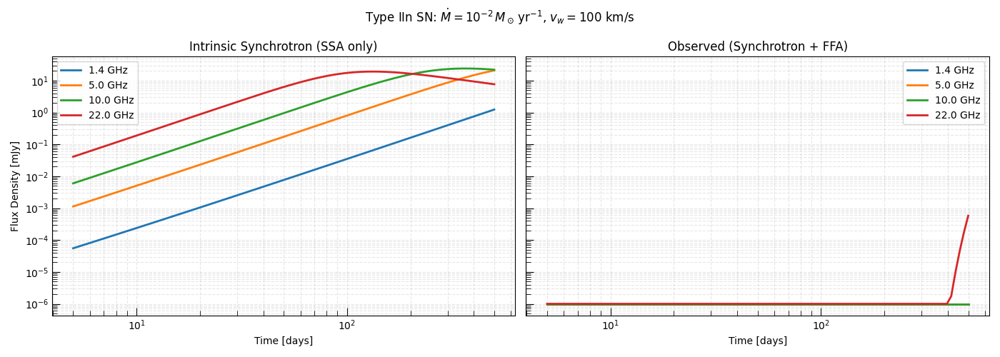
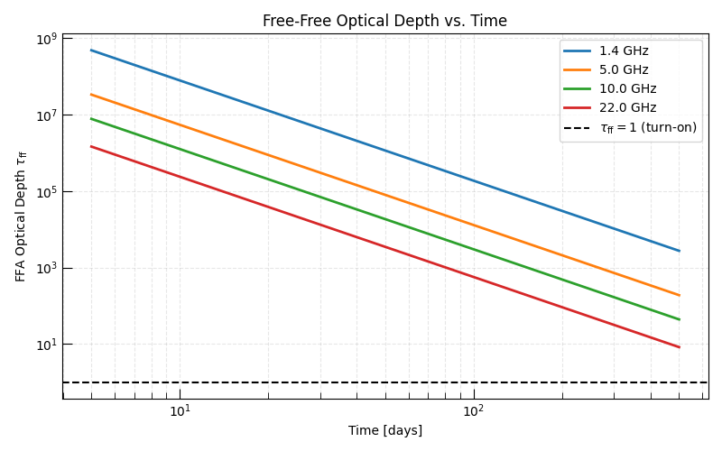
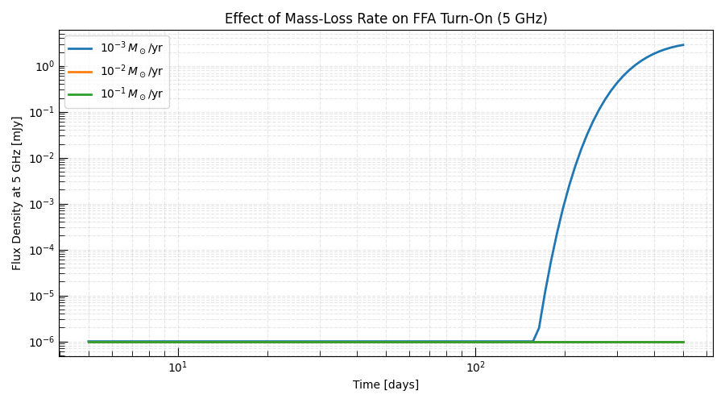

Note
Go to the end to download the full example code.
Type IIn Supernova in a Dense Circumstellar Wind#
Type IIn supernovae are a class of core-collapse events characterized by strong CSM interaction — evidenced by narrow hydrogen emission lines in their optical spectra. The CSM is produced by the mass loss of the progenitor (often a luminous blue variable or red supergiant) in the centuries before the explosion.
This dense, ionized CSM profoundly affects the radio emission: at early times, free-free absorption (FFA) from the unshocked wind keeps the source optically thick at low frequencies. As the blast wave expands and sweeps up the CSM, the FFA column density drops, and each frequency band “turns on” at a different time:
This frequency-dependent turn-on is the defining observational signature of FFA in radio supernovae and is distinct from the SSA turn-on.
Physical Model#
We use:
Chevalier self-similar shock dynamics for the forward shock velocity and radius.
Standard synchrotron emission (SSA + cooling) for the intrinsic SED.
Free-free absorption from the unshocked ionized wind between the shock radius and the outer wind boundary.
The FFA optical depth through the unshocked wind is computed using
compute_ff_RJ_optical_depth_from_quadrature(),
which integrates the absorption coefficient from the shock radius outward.
Relevant API#
compute_ff_RJ_optical_depth_from_quadrature()PowerLaw_Cooling_SSA_SynchrotronSED
Setup#
import matplotlib.pyplot as plt
import numpy as np
from astropy import constants as const
from astropy import units as u
from trilobite.dynamics.shocks import ChevalierSelfSimilarWindShockEngine
from trilobite.radiation.free_free.absorption import (
compute_ff_RJ_optical_depth_from_quadrature,
)
from trilobite.radiation.synchrotron import PowerLaw_Cooling_SSA_SynchrotronSED
from trilobite.radiation.synchrotron.cooling import SynchrotronRadiativeCoolingEngine
from trilobite.utils.plot_utils import set_plot_style
set_plot_style()
Physical Parameters#
We model a Type IIn SN typical of events like SN 2006jd or SN 2010jl — high-energy explosions with very high mass-loss rates.
The key parameter driving FFA is the wind mass-loss rate \(\dot{M}\). Higher \(\dot{M}\) means denser CSM and stronger FFA at early times.
# ------ Shock and CSM parameters ------
E_ej = 3.0e51 * u.erg # High-energy explosion (Type IIn can have E_ej > 10^51 erg)
M_ej = 5.0 * u.Msun
n = 10 # Outer ejecta density index
M_dot = 1.0e-2 * u.Msun / u.yr # High mass-loss rate (LBV-like progenitor)
v_wind = 100.0 * u.km / u.s # Wind speed (LBV; RSG wind is ~10 km/s)
# ------ Microphysical parameters ------
epsilon_e = 0.1
epsilon_B = 0.1
p = 3.0
gamma_min = 1.0
gamma_max = 1e8
mu = 0.61
f_V = 0.5
f_A = 1.0
# ------ Geometry and observing ------
D_L = 50.0 * u.Mpc
obs_frequencies = u.Quantity([1.4, 5.0, 10.0, 22.0], u.GHz)
times = np.geomspace(5.0, 500.0, 100) * u.day
# CSM temperature (ionized wind)
T_wind = 1.0e4 * u.K # photoionized by the SN UV flash
print("=== Type IIn SN Parameters ===")
print(f" E_ej = {E_ej:.1e}")
print(f" M_ej = {M_ej:.0f}")
print(f" M_dot = {M_dot:.2e}")
print(f" v_wind = {v_wind:.0f}")
print(f" D_L = {D_L:.0f}")
=== Type IIn SN Parameters ===
E_ej = 3.0e+51 erg
M_ej = 5 solMass
M_dot = 1.00e-02 solMass / yr
v_wind = 100 km / s
D_L = 50 Mpc
Shock Evolution#
Compute the Chevalier self-similar shock radius and velocity as functions of time.
shock_engine = ChevalierSelfSimilarWindShockEngine()
shock_params = {
"E_ej": E_ej,
"M_ej": M_ej,
"n": n,
"M_dot": M_dot,
"v_wind": v_wind,
}
shock_outputs = shock_engine.compute_shock_properties(times, **shock_params)
r_sh = shock_outputs.radius.to(u.cm)
v_sh = shock_outputs.velocity.to(u.cm / u.s)
# Upstream wind density at the shock radius
rho_up = (M_dot / (4 * np.pi * r_sh**2 * v_wind)).to(u.g / u.cm**3)
# Post-shock magnetic field
_R = 4.0 # compression ratio for strong cold shock (gamma=5/3)
_U = 1.5 * (_R - 1) / _R**2 * rho_up.to_value(u.g / u.cm**3) * v_sh.to_value(u.cm / u.s) ** 2
B = np.sqrt(8 * np.pi * epsilon_B * _U) * u.G
# Synchrotron cooling Lorentz factor
cooling_engine = SynchrotronRadiativeCoolingEngine()
gamma_c = cooling_engine.compute_cooling_gamma(B=B, t=times)
Free-Free Optical Depth from the Unshocked Wind#
The FFA optical depth through the unshocked wind between the shock radius \(R_{\rm sh}\) and the outer wind boundary is:
For a steady wind \(n_e \propto r^{-2}\), the integral converges analytically:
We use the numerical quadrature API for generality.
M_dot_cgs = M_dot.to(u.g / u.s).value
v_wind_cgs = v_wind.to(u.cm / u.s).value
mu_e = 1.14 # mean molecular weight per electron (fully ionized H+He)
mu_i = 1.31 # mean molecular weight per ion
T_wind_K = T_wind.to(u.K).value
def n_e_wind(r):
"""Electron number density in wind [cm^-3]."""
return M_dot_cgs / (4 * np.pi * v_wind_cgs * const.m_p.cgs.value * mu_e * r**2)
def n_i_wind(r):
"""Ion number density in wind [cm^-3]."""
return M_dot_cgs / (4 * np.pi * v_wind_cgs * const.m_p.cgs.value * mu_i * r**2)
def T_const(r):
"""Uniform temperature profile."""
return T_wind_K
# Compute tau_ff at each epoch for each frequency
freq_arr = obs_frequencies.to(u.Hz)
tau_ff = np.zeros((len(times), len(obs_frequencies)))
# Outer wind boundary (a few 10^18 cm, beyond which the wind has swept up)
r_max = 1e19 # cm
for i, r_inner in enumerate(r_sh.to(u.cm).value):
tau_ff[i] = compute_ff_RJ_optical_depth_from_quadrature(
frequency=freq_arr,
r=r_inner * u.cm,
n_e=n_e_wind,
n_i=n_i_wind,
temperature=T_const,
r_max=r_max * u.cm,
)
print(f"\n tau_ff range: {tau_ff.min():.3e} – {tau_ff.max():.3e}")
tau_ff range: 8.226e+00 – 4.855e+08
FFA Attenuation Factor#
The FFA attenuation of the observed flux is \(e^{-\tau_{\rm ff}}\). At \(\tau_{\rm ff} \gg 1\) the source is FFA-absorbed and the flux is exponentially suppressed. At \(\tau_{\rm ff} \ll 1\) FFA is negligible.
Compute Synchrotron SEDs#
At each epoch compute the intrinsic synchrotron SED, then apply FFA attenuation to produce the observed SED.
sed = PowerLaw_Cooling_SSA_SynchrotronSED()
# Light curves with and without FFA
lc_synch = {freq: np.zeros(len(times)) for freq in obs_frequencies.to_value(u.GHz)}
lc_obs = {freq: np.zeros(len(times)) for freq in obs_frequencies.to_value(u.GHz)}
for i, (t, r, B_i, gc) in enumerate(zip(times, r_sh, B, gamma_c)):
sed_params = sed.from_physics_to_params(
B=B_i,
R=r,
gamma_min=gamma_min,
gamma_max=gamma_max,
p=p,
epsilon_E=epsilon_e,
epsilon_B=epsilon_B,
luminosity_distance=D_L,
f_V=f_V,
f_A=f_A,
gamma_c=float(gc),
pitch_average=True,
)
for j, freq in enumerate(obs_frequencies):
F_intrinsic = (
sed.sed(
nu=freq.to(u.Hz),
nu_m=sed_params["nu_m"],
nu_c=sed_params["nu_c"],
F_norm=sed_params["F_norm"],
nu_max=sed_params["nu_max"],
nu_ac=sed_params["nu_a"],
omega=sed_params["omega"],
p=p,
)
.to(u.mJy)
.value
)
F_observed = F_intrinsic * np.exp(-tau_ff[i, j])
freq_ghz = freq.to_value(u.GHz)
lc_synch[freq_ghz][i] = F_intrinsic
lc_obs[freq_ghz][i] = F_observed
Radio Light Curves: With and Without FFA#
The key observational signature: at early times the low-frequency bands are completely absorbed. As the shock expands the FFA optical depth drops below unity and each frequency “turns on” in sequence — highest frequencies first.
freq_colors = ["C0", "C1", "C2", "C3"]
fig, axes = plt.subplots(1, 2, figsize=(14, 5), sharey=True)
for freq, color in zip(obs_frequencies, freq_colors):
freq_ghz = freq.to_value(u.GHz)
axes[0].loglog(times.to_value(u.day), lc_synch[freq_ghz], lw=2, color=color, label=f"{freq_ghz:.1f} GHz")
axes[1].loglog(
times.to_value(u.day), np.maximum(lc_obs[freq_ghz], 1e-6), lw=2, color=color, label=f"{freq_ghz:.1f} GHz"
)
axes[0].set_xlabel("Time [days]")
axes[0].set_ylabel("Flux Density [mJy]")
axes[0].set_title("Intrinsic Synchrotron (SSA only)")
axes[0].legend()
axes[0].grid(True, which="both", ls="--", alpha=0.3)
axes[1].set_xlabel("Time [days]")
axes[1].set_title("Observed (Synchrotron + FFA)")
axes[1].legend()
axes[1].grid(True, which="both", ls="--", alpha=0.3)
plt.suptitle(
rf"Type IIn SN: $\dot{{M}} = 10^{{-2}}\,M_\odot\,{{\rm yr}}^{{-1}}$, $v_w = {v_wind.to_value(u.km / u.s):.0f}$ km/s",
fontsize=12,
)
plt.tight_layout()
plt.show()

FFA Optical Depth Evolution#
Plot the FFA optical depth vs. time at each frequency, with a horizontal line at \(\tau_{\rm ff} = 1\) marking the onset of transparency.
fig, ax = plt.subplots(figsize=(8, 5))
for freq, color in zip(obs_frequencies, freq_colors):
freq_ghz = freq.to_value(u.GHz)
j = list(obs_frequencies.to_value(u.GHz)).index(freq_ghz)
ax.loglog(times.to_value(u.day), tau_ff[:, j], lw=2, color=color, label=f"{freq_ghz:.1f} GHz")
ax.axhline(1.0, ls="--", color="black", lw=1.5, label=r"$\tau_{\rm ff} = 1$ (turn-on)")
ax.set_xlabel("Time [days]")
ax.set_ylabel(r"FFA Optical Depth $\tau_{\rm ff}$")
ax.set_title("Free-Free Optical Depth vs. Time")
ax.legend()
ax.grid(True, which="both", ls="--", alpha=0.3)
plt.tight_layout()
plt.show()

Turn-On Time vs. Frequency#
Find when each frequency becomes optically thin (\(\tau_{\rm ff} < 1\)) and check whether the scaling \(t_{\rm on} \propto \nu^{-2/3}\) holds.
freq_vals = obs_frequencies.to_value(u.GHz)
t_on_arr = []
for j, freq in enumerate(obs_frequencies):
# Find first time tau_ff < 1
transparent = tau_ff[:, j] < 1.0
if transparent.any():
t_on_arr.append(times.to_value(u.day)[transparent][0])
else:
t_on_arr.append(np.nan)
t_on_arr = np.array(t_on_arr)
valid = ~np.isnan(t_on_arr)
if valid.sum() >= 2:
delta, log_t0 = np.polyfit(np.log10(freq_vals[valid]), np.log10(t_on_arr[valid]), 1)
fig, ax = plt.subplots(figsize=(7, 5))
ax.scatter(freq_vals[valid], t_on_arr[valid], s=80, color="C0", zorder=5, label="Measured turn-on times")
nu_fit = np.geomspace(freq_vals[valid].min() * 0.7, freq_vals[valid].max() * 1.5, 100)
ax.loglog(nu_fit, 10**log_t0 * nu_fit**delta, "k--", label=rf"$t_{{on}} \propto \nu^{{{delta:.2f}}}$ (fit)")
ax.loglog(nu_fit, 10**log_t0 * nu_fit ** (-2 / 3), "C3:", label=r"$t_{\rm on} \propto \nu^{-2/3}$ (FFA in wind)")
ax.set_xlabel("Frequency [GHz]")
ax.set_ylabel(r"Turn-On Time $t_{\rm on}$ [days]")
ax.set_title("FFA Turn-On: Frequency Dependence")
ax.legend()
ax.grid(True, which="both", ls="--", alpha=0.3)
plt.tight_layout()
plt.show()
print(f"\n Fitted turn-on scaling: t_on ~ nu^{delta:.2f}")
print(f" Expected (FFA wind) : t_on ~ nu^{-2 / 3:.2f}")
Effect of Mass-Loss Rate#
Higher mass-loss rates produce denser CSM and delay the FFA turn-on. We compare three values of \(\dot{M}\).
Mdot_values = [1e-3, 1e-2, 1e-1] * u.Msun / u.yr
Mdot_labels = [r"$10^{-3}\,M_\odot/{\rm yr}$", r"$10^{-2}\,M_\odot/{\rm yr}$", r"$10^{-1}\,M_\odot/{\rm yr}$"]
Mdot_colors = ["C0", "C1", "C2"]
freq_eval = 5.0 * u.GHz # 5 GHz band for comparison
j_eval = list(obs_frequencies.to_value(u.GHz)).index(5.0)
fig, ax = plt.subplots(figsize=(9, 5))
for Mdot, label, color in zip(Mdot_values, Mdot_labels, Mdot_colors):
sp = {**shock_params, "M_dot": Mdot}
so = shock_engine.compute_shock_properties(times, **sp)
r_i = so.radius.to(u.cm)
v_i = so.velocity.to(u.cm / u.s)
rho_i = (Mdot / (4 * np.pi * r_i**2 * v_wind)).to(u.g / u.cm**3)
_U_i = 1.5 * (_R - 1) / _R**2 * rho_i.to_value(u.g / u.cm**3) * v_i.to_value(u.cm / u.s) ** 2
B_i = np.sqrt(8 * np.pi * epsilon_B * _U_i) * u.G
gc_i = cooling_engine.compute_cooling_gamma(B=B_i, t=times)
M_dot_cgs_i = Mdot.to(u.g / u.s).value
def n_e_i(r):
return M_dot_cgs_i / (4 * np.pi * v_wind_cgs * const.m_p.cgs.value * mu_e * r**2)
def n_i_i(r):
return M_dot_cgs_i / (4 * np.pi * v_wind_cgs * const.m_p.cgs.value * mu_i * r**2)
lc_i = np.zeros(len(times))
tau_i = np.zeros(len(times))
for k, (t_k, r_k, B_k, gc_k) in enumerate(zip(times, r_i, B_i, gc_i)):
sp_k = sed.from_physics_to_params(
B=B_k,
R=r_k,
gamma_min=gamma_min,
gamma_max=gamma_max,
p=p,
epsilon_E=epsilon_e,
epsilon_B=epsilon_B,
luminosity_distance=D_L,
f_V=f_V,
f_A=f_A,
gamma_c=float(gc_k),
pitch_average=True,
)
F_intr = (
sed.sed(
nu=freq_eval.to(u.Hz),
nu_m=sp_k["nu_m"],
nu_c=sp_k["nu_c"],
F_norm=sp_k["F_norm"],
nu_max=sp_k["nu_max"],
nu_ac=sp_k["nu_a"],
omega=sp_k["omega"],
p=p,
)
.to(u.mJy)
.value
)
tau_k = compute_ff_RJ_optical_depth_from_quadrature(
frequency=freq_eval.to(u.Hz),
r=r_k,
n_e=n_e_i,
n_i=n_i_i,
temperature=T_const,
r_max=r_max * u.cm,
)[0]
lc_i[k] = F_intr * np.exp(-tau_k)
tau_i[k] = tau_k
ax.loglog(times.to_value(u.day), np.maximum(lc_i, 1e-6), lw=2, color=color, label=label)
ax.set_xlabel("Time [days]")
ax.set_ylabel("Flux Density at 5 GHz [mJy]")
ax.set_title(r"Effect of Mass-Loss Rate on FFA Turn-On (5 GHz)")
ax.legend()
ax.grid(True, which="both", ls="--", alpha=0.3)
plt.tight_layout()
plt.show()

The comparison demonstrates that denser winds (higher \(\dot{M}\)) delay the radio turn-on and suppress the early-time flux. This is why Type IIn SNe with very high mass-loss rates (\(\dot{M} > 0.1\,M_\odot/{\rm yr}\)) may remain radio-dark for years, while Type Ibc SNe with thin winds turn on in weeks.
Total running time of the script: (0 minutes 11.665 seconds)